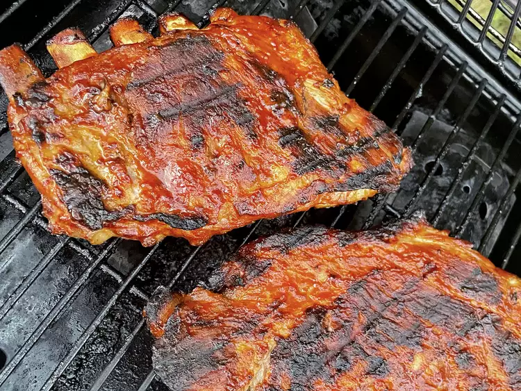

Southern BBQ Ribs

Desciption
These grilled BBQ ribs have a delicious smoky flavor that Southerners expect without all the grilling time.
The ribs are baked, then grilled and basted with a homemade BBQ sauce for just 30 minutes.
Ingredients
- 4 pounds baby back pork ribs
- Vinegar
- Smoky flavor
- Ketchup
- Brown Sugar
How to make it? There you go Habibi
- Place ribs in two 10x15-inch roasting pans. Pour water and red wine vinegar into a bowl; stir to mix.
- To make the BBQ sauce: Mix ketchup, water, vinegar, Worcestershire sauce, mustard, butter, brown sugar, hot pepper sauce, and salt together in a medium saucepan; bring to a boil.
- Preheat grill for medium heat.
- Lightly oil preheated grill. Transfer ribs from the oven to the grill, discarding cooking liquid.